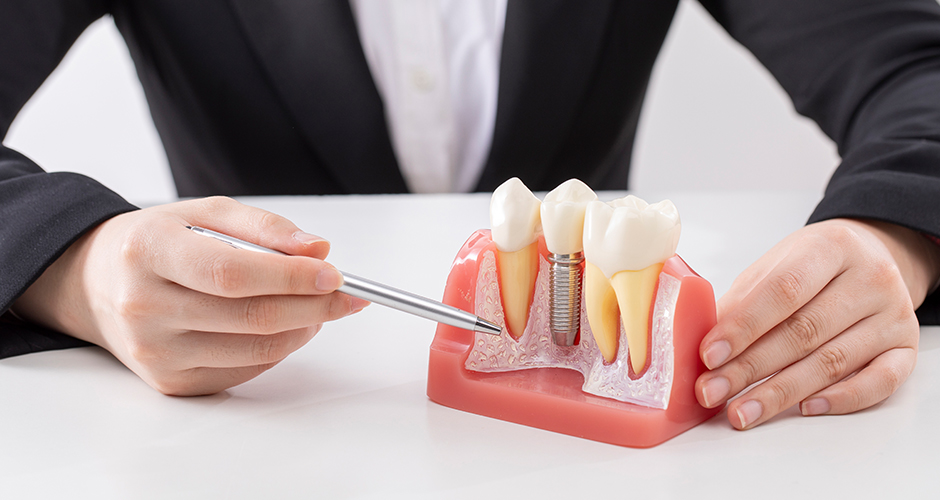
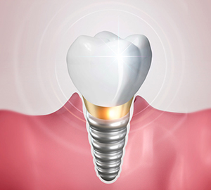
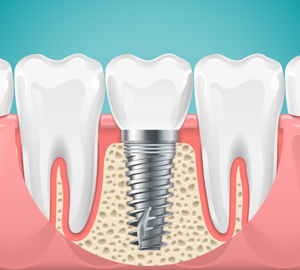
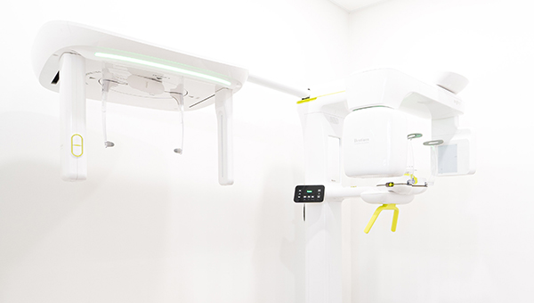
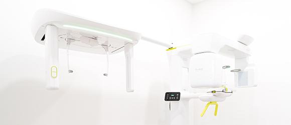
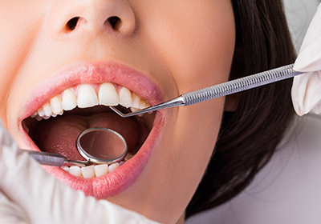
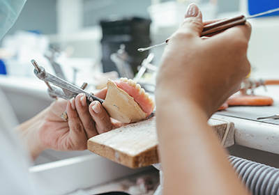

임플란트 주위염
시술은 잘 되었으나 관리부족으로
임플란트 주변에 세균이 번식하여
임플란트 주위염이 생긴 경우
<%=m_client_en%>
임플란트 수술 후 여러 가지 요인으로 인해 다시 임플란트 시술을 해야 하는 경우가 있습니다.
재수술 임플란트 이미 식립한 기존의 임플란트를 제거하고
잇몸뼈의 형태를 정비 한 뒤 새 임플란트를 식립해야 하는 고난이도 수술입니다.


시술은 잘 되었으나 관리부족으로
임플란트 주변에 세균이 번식하여
임플란트 주위염이 생긴 경우
의료진이 임플란트 식립에 대한
장기적 안정성에 대한
숙련도가 부족한 경우

골융합(임플란트와 잇몸뼈가 서로
붙는 과정이 제대로 이루어지지 않아서
임플란트가 탈락되거나 부러진 경우
기존임플란트 제거 후 새로운 임플란트를 식립할때 광범위한 골 파괴가 동반이 되는 등
치조골의 상태가 처음 같지 않아 고난이도의 수술이라고 할수 있습니다.
신경손상으로 인해 감각 이상이 생겼지만 이미 골유착이 일어난 경우에는
억지로 임플란트를 제거하는 과정에서도 뼈가 상할 수있음
임플란트를 처음 심을 때 잇몸뼈(치조골)에 한번 구멍을 냈으므로
잇몸뼈(치조골)의 상태가 처음 같지 않을 수 있음
주위염으로 인해 뼈가 상했을 경우 상한 부분을 제거해야하기 때문에
더 많은 잇몸 뼈를 상실할 수 있음
치료가 한번 실패한 부위에 다시 임플란트를 식립하는 것은
맨 처음 치조골 상태가 좋은 부위에 심는 것 보다
훨씬 고난이도의 수술이므로 구강내 잇몸뼈 전체의 내부를
파악할 수 있는 3D CT 등 최신 장비를 갖추고
임플란트 분야의 경험이 많은 의료진이 있는 치과에서
시술해야 좋은 결과를 얻을 수 있습니다.

손상된 임플란트를 제거 할 때 광범위한 골파괴가 동반되는 등
치조골의 상태가 처음과 같지 않아 고난이도의 수술로 이어질 수 있습니다.
1차수술이 왜 실패하였는지 원인에 대해 정확하게 파악하고 분석해야
재수술 계획이 더 체계적이고 꼼꼼하게 이루어질수 있기 때문에
의료진의 높은 수준과 임상경험 능력이 필요합니다.
마지막 임플란트가 될 수 있도록 기존 임플란트 실패의 원인에 대한 분석을
가장 꼼꼼하게 살피고 치료계획을 수립합니다.
고난이도 테크닉을 요하는 만큼 재수술 사례의 경험이 풍부한
숙련된 원장님이 직접 진료합니다.

환자의 상태를 정밀하게 분석하기 위해 3D CT등의 최신장비를 이용하여
안전하고 오차없는 수술로 정확도를 높힙니다.
임플란트 재수술의 대표적인 원인이 되는 환자분들의 관리 소홀 부분까지도
정기적인 검진 시스템으로 책임져드립니다.

